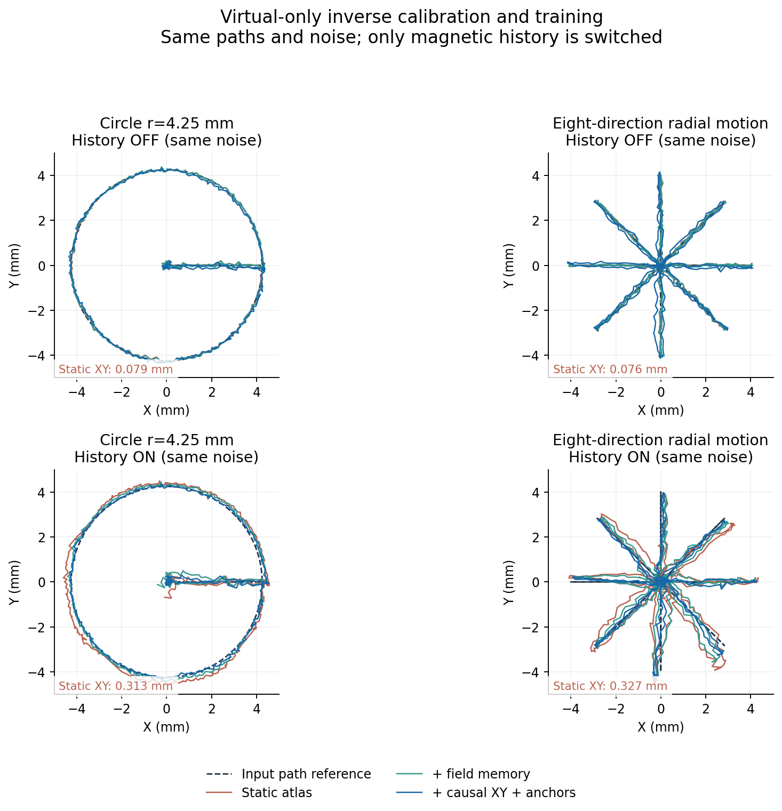
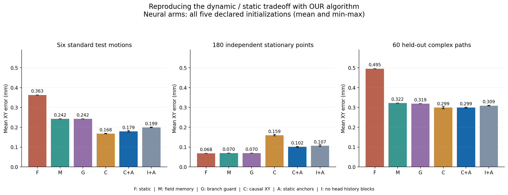
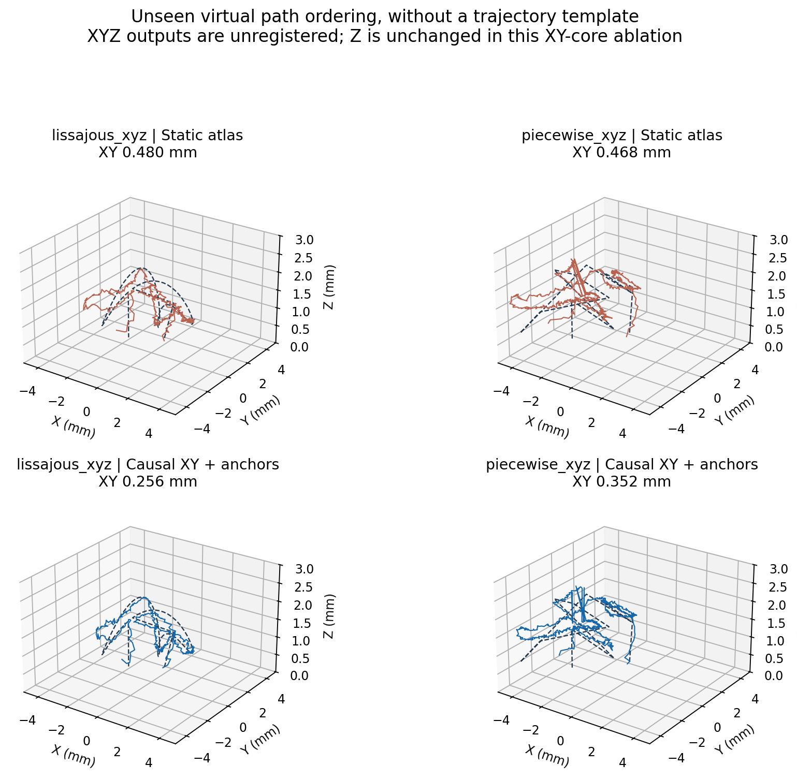

仿真能否复现科学问题、解决思路与消融过程？
本轮目的：用虚拟磁场重新走过静态标定、动态失配、历史分配与受约束修正的研究过程。沿用论文自己的模块及同一网络结构，不以替换正式模型或虚拟增强超过实测模型作为成功标准。
一、已复现的关键关系
这复现了论文的核心权衡：静态标定能成立，但带历史的运动观测不再落在同一静态映射上；动态修正有用，却需要静态约束。当前仅复现核心XY链条，并未复现所有最终系统模块。
二、真正用虚拟数据重新建模
冻结经验正向生成器 → 121个虚拟XY点×14压深建立1694点磁图 → 12条完整标准虚拟运动拟合二维记忆基与XY头 → 6条标准虚拟运动选择记忆参数和轮次 → 测试6条标准动作、180个独立静止点、60条复杂虚拟路径。
逆模型不载入真实训练得到的磁图、记忆基或神经网络权重。采用原算法的53→64→64→2 tanh头，五个预声明初始化种子7、17、27、37、47全部报告。因果头只读当前及过去磁场、磁图估计和历史状态，虚拟XYZ只提供训练监督与测试评分。
生成器本身先前用源器件实测数据拟合。因此这是经验仿真中的条件性机制复现，不是从独立力学与电磁方程首次推导出这些机制，也不能拿仿真分数代替真实器件实验。
三、在同一个虚拟世界内干预历史
ΔBλ(t)=Gstatic(qt)+λ[Gdynamic(q0:t)−Gstatic(qt)]+εt。上下行使用同一路径与同一噪声，只有λ从0变1；逆模型均已冻结，不读取λ。输出未做坐标平移、时间配准或平滑。70 µT幅值门作为本次定位模块公共门，各模块在同一世界共享许可；两个世界磁幅值可能不同，许可分别计算，覆盖率另报。

图固定选取半径4.25 mm圆与八方向扫描，曲线使用第一预声明种子7，不按最优误差挑种子。仅绘制评分工作域内段。蓝线是虚拟数据训练得到的逆解，不是输入轨迹的复制。
四、按论文问题组织消融，而非算法排行榜

| 同一方法的模块对照 | 历史关闭：6动作 | 历史打开：6动作 | 独立静止点 | 未见复杂路径：60条 |
|---|---|---|---|---|
| 瞬时静态磁图 | 0.096 | 0.363 | 0.068 | 0.495 |
| 加入磁场域慢记忆 | 0.099 | 0.242 | 0.070 | 0.322 |
| 加入磁证据分支保护 | 0.099 | 0.242 | 0.070 | 0.319 |
| 因果XY头，不加静态锚点 | 0.170 [0.168–0.174] | 0.168 [0.167–0.170] | 0.159 [0.157–0.164] | 0.299 [0.293–0.305] |
| 因果XY头，加入静态锚点 | 0.144 [0.140–0.146] | 0.179 [0.176–0.183] | 0.102 [0.098–0.104] | 0.299 [0.297–0.302] |
| 同架构XY头，去掉历史输入块 | 0.133 [0.131–0.137] | 0.199 [0.197–0.201] | 0.107 [0.104–0.112] | 0.309 [0.307–0.311] |
单位mm，均为未配准XY误差。神经网络栏：五次初始化平均[最小–最大]；非神经栏确定性单值。完整Trial等权，不按总帧数加权。工作域为XY±6 mm、名义压深0.4–3.0 mm；本轮不评价浅层动作门控。
去掉头部h及历史差分块时，上游记忆和分支模块仍保留，网络宽度、层数和静态锚点不变。完整因果输入使六类动态动作误差再下降9.8%；这衡量额外历史特征的作用，不是“整个系统无历史”的消融。
静态锚点把静止点误差从0.159降到0.102 mm，但还高于静态磁图的0.068 mm；标准动态误差略升，复杂路径总体近似不变。保留这一权衡，不能写成所有模块都单调改善。锚点对照改变训练样本构成及相应归一化统计，并非只改变一个损失权重。
去除固定平移的诊断已另存CSV与JSON，只用于检查形状误差；不把逐记录拟合的平移当独立校准。
五、没有训练过的虚拟三维动作

全部60条复杂路径均未进入逆模型训练或选参；动态顺序和几何来自六类复杂随机生成。相对静态逆解，五次初始化平均XY误差下降39.6%。这里证明的是同一生成器工作域内对新路径组合的泛化，不是另一真实器件或未见材料的泛化。图固定使用清单中第一条Lissajous与第一条分段XYZ路径。
六、哪些环节还不能宣称复现
磁证据否决：六类标准加60条复杂测试均没有触发四倍磁误差否决；局部分支在复杂测试共选中605帧，总体误差略降，但尚不足以复现真实记录中的错误锁支与否决机制。下一步需要搜索虚拟歧义候选，先验证其确实引发错误续支，再比较保护开关。
Z稳定化与浅层状态：本轮遵循原核心算法的静态Z保留原则，所有XY消融的Z逐帧相同；没有用它冒充最终深度头或浅层状态层的消融。后续将用同一思路单独复现深度跳支、深度约束及静态/动态Z协调。
物理规律：生成器显式包含历史项，历史开关自然会改变磁场；有研究意义的是同一组观测能否重新导向相同的逆问题与算法权衡，而非以该开关本身证明硅胶的本构规律。新增规律应成为可检验的候选，并在留出实测记录或物理求解器中交叉确认。
七、仿真的研究价值与下一步
这一轮已经给出“仿真可复现部分关键问题与消融关系”的具体证据。快速生成很多动作使我们能够扫描速度、停驻、反转、压深与历史强度，并用同一路径干预单一因素，这是单纯重复实测较难做到的。它也能指出生成器缺什么：没有错误分支或Z失稳，不能用更多同类平滑轨迹代替这些机制。
下一步围绕仿真中的问题复现继续：① 对历史强度、速度和停驻进行预定义扫描，记录静态/动态冲突的出现范围；② 从混淆搜索候选构建错误续支对照；③ 加入最终Z模块的同架构虚拟训练与消融。稀疏节点预测、多点接触和训练增强作为旁线，物理验证与实测确认各自保留。
现有混淆搜索、实测历史候选及稀疏节点补全详见补充研究报告。正式模型、原始实测数据、实验设备及论文均未改动。